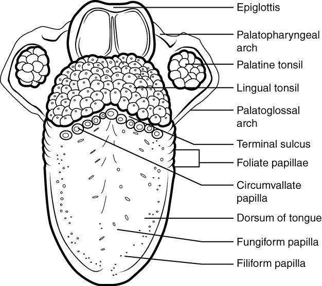
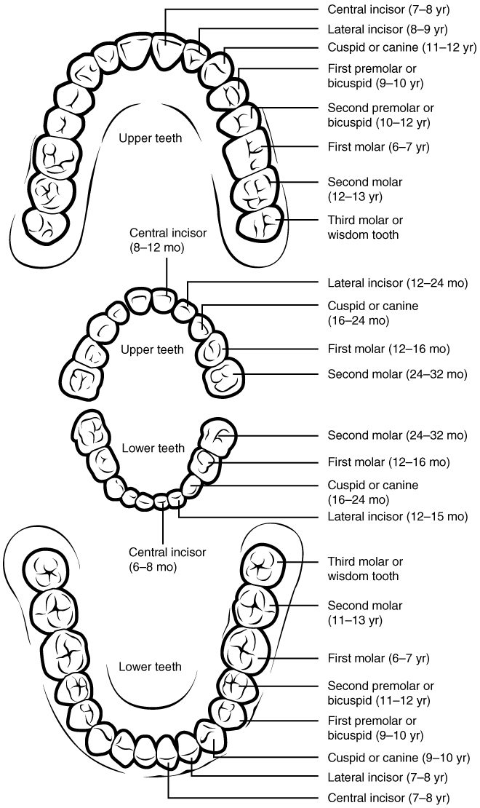
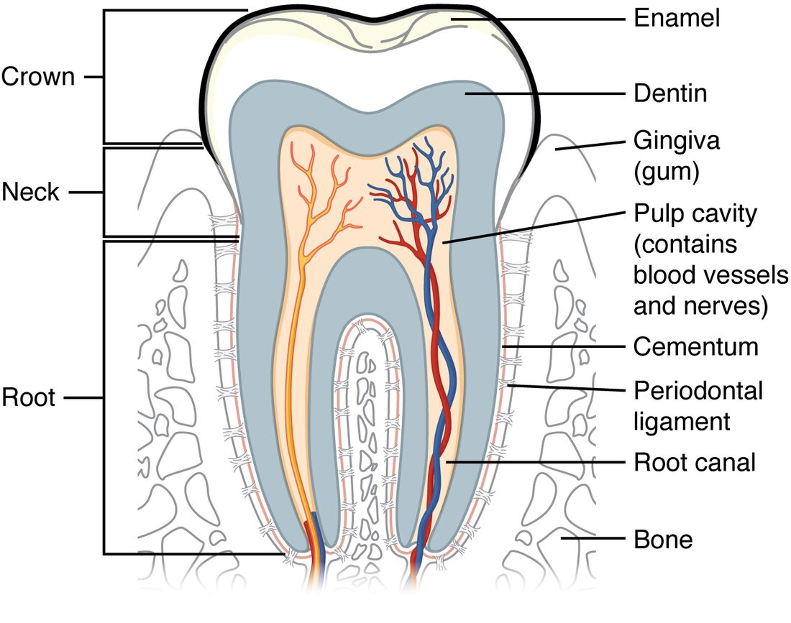
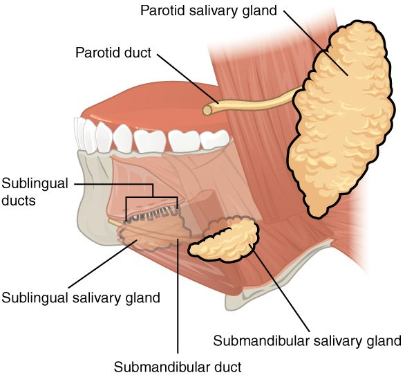
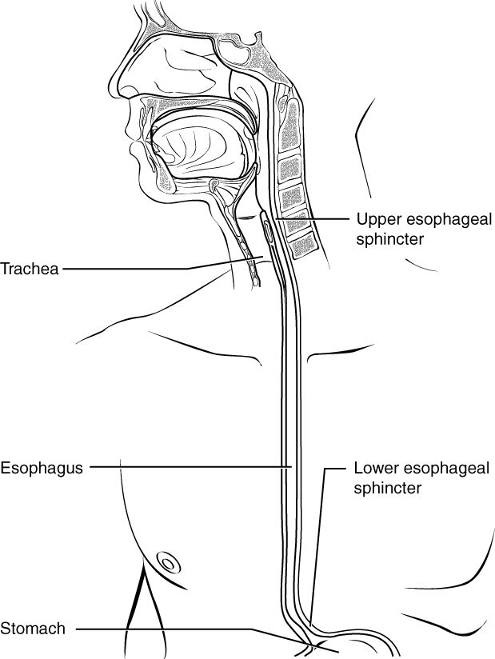

Every mouthful starts the same way: teeth break it up, saliva wets it and starts digesting its starch, the tongue shapes it into a soft ball, and a swallow sends it on a journey of a few seconds to the stomach. This page covers the parts of that first stretch of the alimentary canal: the mouth and tongue, the teeth, the salivary glands and saliva, chewing, the swallowing phases, and the esophagus with the two sphincters that guard its ends. The pharynx, which you met with the airway, links them.
The oral cavity
Open your mouth in front of a mirror and you can check most of this section yourself (Figure 1). The oral cavity (or- = mouth), or mouth, is bounded by the lips in front, the cheeks at the sides, the palate above and the tongue and floor of the mouth below. The buccinator muscles in the cheeks and the orbicularis oris in the lips, which you met with the muscles of facial expression, keep food between the teeth as you chew.
It has two spaces:
- The oral vestibule (vestibul- = entrance hall) is the narrow space between your lips and cheeks on the outside and your teeth and gums on the inside. Run your tongue around the outside of your teeth: that is the vestibule.
- The oral cavity proper is everything inside the arches of the teeth.
Other parts to find:
- The labial frenulum (labi- = lip, frenulum = little bridle) is the fold of mucosa that joins each lip to the gum at the midline.
- The gingiva (plural gingivae) is the gum: the mucosa and connective tissue that cover the bone around the necks of the teeth.
- The hard palate (palat- = roof of the mouth) is the front two thirds of the roof, with bone inside it: the palatine processes of the maxillae and the palatine bones. It gives the tongue a firm surface to press food against.
- The soft palate is the back third: a fold of skeletal muscle covered by mucosa, with no bone. When you swallow, it lifts and seals off the nasopharynx.
- The uvula (little grape) is the small flap that hangs from the middle of the soft palate's back edge.
- The fauces (throat) is the opening at the back of the mouth into the oropharynx. It is framed on each side by two arches of mucosa, the palatoglossal arch in front and the palatopharyngeal arch behind, with a palatine tonsil between them.
The lining of the mouth is nonkeratinized stratified squamous epithelium, which withstands abrasion. Over the gums, the hard palate and the top of the tongue, where the wear is heaviest, it is partly keratinized.
![A front view into a wide-open mouth. The upper and lower rows of teeth form two arches, with flat cutting teeth at the front, a pointed tooth at each corner and broad grinding teeth toward the back. Above is the bony front of the roof of the mouth and the soft back part with a small hanging flap in the middle. Arches of tissue at the back frame the opening to the throat, with a tonsil between them on each side. The tongue is raised, showing the fold of tissue under it and small duct openings on the floor of the mouth. Folds join the lips to the gums at the midline.](../figures/os-23-7.jpg)
The tongue
The tongue is a mass of skeletal muscle covered by mucosa. Two groups of muscle move it:
- Intrinsic muscles lie inside the tongue and change its shape: they curl, flatten and narrow it.
- Extrinsic muscles run into the tongue from bones outside it (the mandible, the hyoid bone and the skull) and change its position: they push it out, pull it back and move it side to side.
The hypoglossal nerve (XII) supplies almost all of them. The lingual frenulum (lingu- = tongue) is the fold of mucosa that anchors the underside of the tongue to the floor of the mouth. When it is unusually short, the tongue cannot reach far forward, a condition called tongue-tie.
The top of the tongue is rough because it is covered in papillae (papilla = nipple), small projections of mucosa (Figure 2):
- Filiform papillae (fili- = thread) are the most numerous. They are thin, keratinized and have no taste buds. They grip food and give the tongue its velvety texture.
- Fungiform papillae (fungi- = mushroom) are scattered mushroom-shaped bumps, most numerous at the tip and sides, with taste buds on top.
- Circumvallate papillae (circum- = around, vall- = wall) are 8 to 12 large round bumps in a V across the back of the tongue, each sunk in a moat. Many taste buds line their walls.
- Foliate papillae (foli- = leaf) are the ridges on the back sides of the tongue, also with taste buds.
Behind the V, the base of the tongue carries the lingual tonsil.

Teeth
Two sets
You grow two sets of teeth, your dentition (dent- = tooth). Look at Figure 3, which shows both with the ages at which each tooth usually appears.
- The deciduous teeth (decidu- = falling off), or baby teeth, number 20. The first appear at about 6 months, and the set is complete by about 2 to 3 years. They are shed from about age 6 as the permanent teeth push up beneath them.
- The permanent teeth number 32. The first molars arrive at about age 6, and the second molars at about 12. The third molars, the wisdom teeth, appear in the late teens or twenties, or never.

Four kinds of teeth
Each quarter of an adult mouth, from the midline back, holds two incisors, one canine, two premolars and three molars: 8 per quarter, 32 in all. Their shapes match their jobs.
| Incisors | Canines (cuspids) | Premolars (bicuspids) | Molars | |
|---|---|---|---|---|
| Shape of the crown | Flat blade like a chisel | A single point | Two points (cusps) | Broad, with four or five cusps |
| Job | Cutting and biting off | Tearing and piercing | Crushing and grinding | Grinding |
| Number in the adult set | 8 | 4 | 8 | 12, including 4 wisdom teeth |
| Number in the deciduous set | 8 | 4 | None | 8 |
An incisor (incis- = cut) cuts; a canine (can- = dog), also called a cuspid (cusp = point), tears; a premolar sits in front of the molars; and a molar (mol- = millstone) grinds.
Inside a tooth
Every tooth has the same parts (Figure 4). The crown is the part above the gum, the neck is at the gum line, and one to three roots sit in a socket in the jaw. From the outside in:
- Enamel caps the crown. It is the hardest substance in your body, about 96% mineral, mostly crystals of calcium phosphate. Once a tooth has come in, enamel has no living cells, so no cells can rebuild it. Minerals from saliva, helped by fluoride, can harden an early weak spot again, but once decay has made a hole, the enamel never grows back.
- Dentin forms the bulk of the tooth under the enamel. It is bone-like but harder than bone, and it is crossed by tiny tubules holding extensions of living cells at its inner edge. When decay or a drill reaches dentin, the tooth starts to hurt.
- The pulp cavity is the central space, filled with pulp: connective tissue with blood vessels and nerves. It narrows into a root canal in each root, through which the vessels and nerves enter.
- Cementum (bone-like tissue) covers the dentin of the root. Fibers of the periodontal ligament run from the cementum to the bone of the socket and hold the tooth in place, the gomphosis you met with the joints.

Salivary glands and saliva
Three pairs of major glands
Small salivary glands in the lining of your lips, cheeks and tongue keep your mouth moist all the time. Most saliva, though, comes from three pairs of large exocrine glands outside the mouth that deliver it through ducts (Figure 5):
- The parotid gland (par- = beside, ot- = ear) is the largest. It sits in front of and below each ear, over the masseter. Its duct runs forward across the cheek and opens inside the cheek beside the upper second molar. Its saliva is watery and rich in enzyme. Mumps, a viral infection, makes the parotid glands swell, giving the face its puffy look.
- The submandibular gland (sub- = below, mandibul- = lower jaw) lies under the body of the mandible. Its duct opens under the tongue, beside the lingual frenulum. It makes most of the saliva in your mouth at rest, a mix of watery and mucous secretion.
- The sublingual gland (sub- = below, lingu- = tongue) is the smallest. It lies in the floor of the mouth under the tongue and opens through many small ducts. Its saliva is mostly mucus.

What saliva contains
You make about 1 to 1.5 liters of saliva a day. It is more than 99% water, with:
- Mucus, which binds chewed food together and lubricates it for swallowing.
- Salivary amylase (amyl- = starch, -ase = enzyme), which starts splitting starch into shorter sugar chains and maltose. Chew a plain cracker for a minute and it starts to taste sweet.
- Lingual lipase, from small glands on the tongue, which can split triglycerides. It matters in rats and mice, but in humans there is only a trace of it. The fat digestion that starts before the small intestine is done by a lipase from the stomach lining, which the stomach topic covers.
- Protective molecules: lysozyme and defensins that damage bacteria, and IgA antibodies, the class secreted onto mucous membranes.
- Bicarbonate and phosphate, which buffer acids made by mouth bacteria and help protect enamel.
Saliva also dissolves food molecules so they can reach your taste buds, and it rinses the mouth. A dry mouth tastes poorly and decays quickly.
Salivary amylase does not stop at the back of your throat. It keeps working inside a swallowed mouthful in the stomach until stomach acid soaks into it and lowers the pH enough to stop it, often for half an hour or more.
How salivation is controlled
Salivation is controlled almost entirely by the autonomic nervous system, not by hormones. Salivatory nuclei in the brainstem receive input from taste buds, from touch and pressure in the mouth, from the smell and sight of food and even from thinking about it, and from the stomach. They send parasympathetic signals through the facial nerve (VII) to the submandibular and sublingual glands and through the glossopharyngeal nerve (IX) to the parotid gland. As you saw in the autonomic chapter, both divisions increase secretion: parasympathetic activity brings a large volume of watery saliva, and sympathetic activity a small volume of thick saliva. That is why anxiety leaves your mouth dry and sticky, and why atropine, which blocks muscarinic receptor proteins, dries the mouth.
The gland cells first make a fluid much like plasma. As it flows along the ducts, the duct cells take back sodium and chloride but let little water follow. So saliva ends up hypotonic, and the faster it flows, the less time the ducts have to change it.
Chewing
Mastication (masticat- = chew), or chewing, is the mechanical digestion done in the mouth. The muscles of mastication (masseter, temporalis and the pterygoids, supplied by the mandibular division of the trigeminal nerve) raise, lower and slide the mandible. The tongue and the buccinators keep pushing food back between the teeth. You start and stop chewing at will, but a pattern generator in the brainstem runs the rhythm, so you can chew while thinking of something else.
Chewing does three things: it breaks food into small pieces with more surface for enzymes, it mixes the pieces with saliva, and it shapes them into a soft, slippery ball. That ball of chewed food is a bolus (Greek bolos = lump). A bolus is what you swallow.
Swallowing
Swallowing, or deglutition (de- = down, glut- = swallow), moves a bolus from the mouth to the stomach. It is one of the most complex reflexes in your body: more than 25 pairs of muscles act in a fixed order within about a second. It has three phases (Figure 6).
1. The voluntary phase
In the voluntary phase you decide to swallow. The tip of the tongue presses up against the hard palate, and a wave of pressure runs back along the tongue, squeezing the bolus into the oropharynx. Up to this point you can stop.
2. The pharyngeal phase
The pharyngeal phase is an involuntary reflex. Once the bolus touches the back of the mouth and the oropharynx, sensory fibers in the glossopharyngeal (IX) and vagus (X) nerves signal a swallowing center in the medulla oblongata and pons. The center fires a fixed sequence that you cannot stop:
- The soft palate and uvula lift and seal off the nasopharynx, so food cannot go up into your nose.
- The vocal folds close, sealing the airway from inside. This starts at the very beginning of the swallow, before or as the larynx moves, as you saw with the larynx.
- Muscles attached to the hyoid bone pull the larynx up and forward under the base of the tongue, and the epiglottis tips down and back over its opening.
- Breathing stops for about a second.
- The constrictor muscles of the pharynx contract from top to bottom, squeezing the bolus down.
- The upper esophageal sphincter, a ring of skeletal muscle at the top of the esophagus that stays contracted between swallows, relaxes. The rising larynx pulls it open, and the bolus enters the esophagus.
The whole phase takes less than a second. If any part of it is weak or badly timed, food or liquid can enter the larynx. That is aspiration, and it triggers coughing, or, if the cough is weak, pneumonia.
3. The esophageal phase
In the esophageal phase, the upper esophageal sphincter closes behind the bolus and a peristaltic wave carries it down the esophagus. A solid bolus takes about 5 to 10 seconds to reach the stomach; liquids arrive faster. Gravity helps when you are upright but is not needed: peristalsis moves food even if you swallow while hanging upside down, and astronauts swallow normally in orbit. If a piece of food sticks partway, its stretch of the wall starts a second, local peristaltic wave run by the enteric nervous system.
As the swallow begins, the lower esophageal sphincter at the bottom of the esophagus relaxes and stays relaxed until the bolus has passed. Vagal fibers activate enteric inhibitory neurons in the sphincter, which release nitric oxide, and the smooth muscle relaxes. Then the sphincter closes again.
The esophagus
The esophagus (Greek, "carrier of what is eaten") is a muscular tube about 25 cm long (Figure 7). It begins at the bottom of the laryngopharynx, at the level of the cricoid cartilage, runs down the chest behind the trachea, passes through an opening in the diaphragm and joins the stomach just below it. Between swallows it is flat and empty.

Its wall
The esophagus has the four-layer wall of the GI tract, with three differences that match its job:
- Mucosa: nonkeratinized stratified squamous epithelium, which withstands rough food. Where it meets the stomach, it changes abruptly to simple columnar epithelium.
- Submucosa: holds mucous glands whose secretion lubricates the passing bolus.
- Muscularis externa: skeletal muscle in the upper third, a mixture in the middle third, and smooth muscle in the lower third. That is why the start of the esophagus is driven directly by brainstem motor neurons, while its lower part also relies on the enteric nervous system.
- Outer layer: in the chest, an adventitia of fibrous connective tissue that binds it to its neighbors, instead of a serosa. Only the short stretch below the diaphragm has a serosa.
The two sphincters
| Upper esophageal sphincter | Lower esophageal sphincter | |
|---|---|---|
| Location | Junction of the pharynx and esophagus | Junction of the esophagus and stomach |
| Muscle | Skeletal | Smooth, helped by the diaphragm wrapped around it |
| At rest | Closed | Closed |
| What closure prevents | Air entering the esophagus as you breathe in | Stomach contents flowing back up |
| How it opens | Its motor neurons stop firing, and the rising larynx pulls it open | Enteric inhibitory neurons release nitric oxide and relax it |
The lower esophageal sphincter is not a thick ring you could see from outside. It is a 3 to 4 cm zone of slightly thickened smooth muscle that stays contracted, plus the muscle of the diaphragm that pinches the esophagus as it passes through. Together they keep the pressure there higher than in the stomach.
Heartburn and GERD
When stomach contents flow back up past the lower esophageal sphincter, the acid irritates the squamous lining of the esophagus, which has little protection against it. You feel a burning pain behind the sternum: heartburn, which has nothing to do with the heart. Heartburn now and then is common, for example after a large, fatty meal or lying down soon after eating.
When reflux happens often enough to cause symptoms or damage, it is gastroesophageal reflux disease (GERD). The main cause in most people is not a weak sphincter all the time, but brief relaxations of the sphincter that are not linked to swallowing, set off by stretch of the upper stomach after a meal. A sphincter with low pressure, and a hiatal hernia (the top of the stomach pushed up through the diaphragm, so the diaphragm no longer pinches the sphincter), make it worse. Being overweight, pregnancy, smoking and alcohol all make reflux more likely. Treatment includes smaller meals, not eating before lying down, raising the head of the bed and medicines that reduce acid secretion.
Summary
The oral cavity has a vestibule between the lips, cheeks and teeth, a bony hard palate and a muscular soft palate with the uvula, and the fauces opening into the oropharynx. The tongue is skeletal muscle whose papillae grip food (filiform) or carry taste buds (fungiform, circumvallate, foliate). You have 20 deciduous and 32 permanent teeth: incisors cut, canines tear, premolars and molars grind. Enamel caps the crown and cannot be repaired; dentin forms the bulk; the pulp cavity holds vessels and nerves; cementum and the periodontal ligament anchor the root. The parotid, submandibular and sublingual glands make about 1 to 1.5 L of hypotonic saliva a day, containing mucus, salivary amylase, a trace of lingual lipase, lysozyme, IgA and buffers, under autonomic control. Chewing forms a bolus. Swallowing has a voluntary phase and two reflex phases: in the pharyngeal phase the soft palate, vocal folds, larynx and epiglottis protect the airway, and in the esophageal phase peristalsis carries the bolus through the esophagus as the lower esophageal sphincter relaxes. Reflux past that sphincter causes heartburn and, when frequent, GERD.